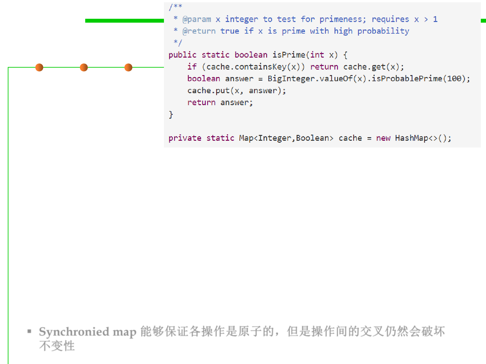

A few points
10.1 Concurrency and Thread-Safety
▪ The synchronized map ensures that containsKey(), get(), and
put() are now atomic, so using them from multiple threads won’t
damage the rep invariant of the map.
▪ But those three operations can now interleave in arbitrary ways with
each other, which might break the invariant that isPrime needs from
the cache: If the cache maps an integer x to a value f , then x is prime
if and only if f is true.
▪ If the cache ever fails this invariant, then we might return the wrong
result.
▪ Synchronied map 能够保证各操作是原子的，但是操作间的交叉仍然会破坏
不变性